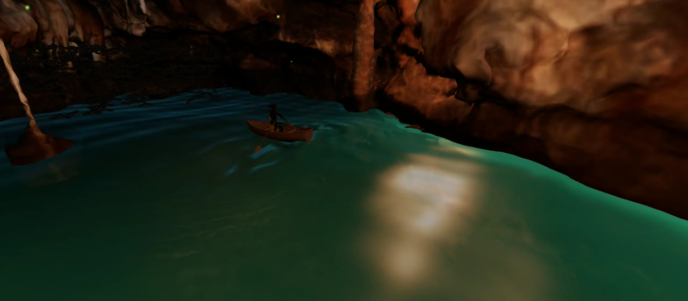
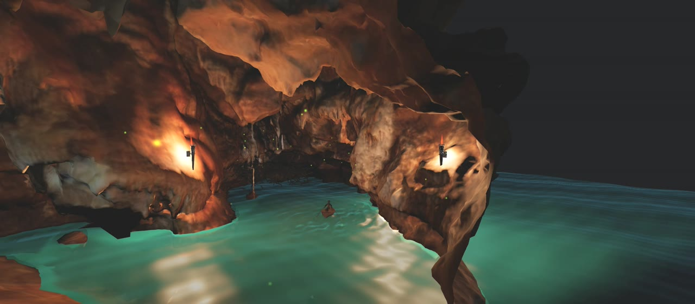

Moonlit Cave Diorama
1Scene Overview
Development environment
The project is written in plain ES-module JavaScript on top of
three.js r160 (WebGL 2), loaded through an HTML import map from unpkg, no bundler,
build step, physics engine or game engine. The entire scene lives in a single main.js served as
static files, so it runs from any static web server (e.g. python -m http.server) or GitHub Pages.
The WebGLRenderer is created with antialias and stencil buffers, sRGB
output, ACES filmic tone mapping and PCF soft shadow maps; localClippingEnabled is switched on for
the diorama cut (Section 3.3). Besides three.js itself, the only libraries used are two of its addon
modules, tween.js for eased transitions and lil-gui for the debug panel, listed in
full in Section 4.
World layout
The world is built in a Z-up coordinate system (camera.up.set(0,0,1)), rather than the Y-up convention
three.js uses by default. The diagram below is a top-down map of the world, drawn to the actual
coordinates used in main.js.
main.js
(1 world unit = 30 px vertically; the x-axis is stretched ×2.3 so the narrow cave reads clearly). The moon sits far beyond the map,
positioned from GUI spherical coordinates.the cave is an optimized OBJ/MTL mesh, normal-mapped, lit almost entirely by point-light torches; the diorama cut removes everything behind the entrance and fills the cross-section with a stencil-buffer cap (Section 3.3); the river follows a Catmull-Rom spline while a longer spline carries the boat in and out of the cave; the boat carries a skeletal, IK-rigged captain whose arms track the procedurally animated oars every frame; 350 rigged bats roost deep in the cave and react to the boat with a scripted encounter; the water is a single custom-shader mesh with waves, oar ripples, a boat wake, torch reflections, a moon glade and shoreline opacity blending; and fireflies plus layered fog banks add atmosphere at the edges.


How the project meets the course requirements
| Requirement | Where it is satisfied |
|---|---|
| Hierarchical models (at least one complex model) |
The boat is a hierarchy of hull → oar bones → the parented, skeleton-rigged captain, whose shoulder/elbow/hand bone chains are driven by analytic two-bone IK exploiting exactly that structure (Section 3.6). Each of the 350 bats is an independently cloned skinned skeleton (Section 3.7); torches parent flame quads and point lights (Sections 3.2, 3.5). |
| Lights and textures (≥ 1 light; textures of different kinds) |
Ambient + hemisphere + directional fill, a moon directional light, and three flickering torch point
lights with distance-selected shadow casting (Section 3.2). Textures: color/diffuse maps (cave MTL, moon,
captain PBR), a normal map (cave_normal.png), a runtime canvas-generated halo sprite, and
procedural shader "textures" for water, flames and fog (Sections 3.4, 3.5, 3.9). |
| User interaction | Pointer-locked free-flight camera with keyboard movement, scroll-wheel speed and boost (Section 2), plus a live GUI of ~30 parameters, lights, colors, waves, animation speeds, the moon's position, and an on-screen HUD (Section 3.11). |
| Animations (implemented in JavaScript, not imported) |
No animation is imported anywhere. Models are loaded as static or rigged-but-unanimated meshes; every motion, boat spline-following and wave-rocking, procedural oar strokes, the captain's per-frame IK, bat steering and flapping, torch flicker, water swell, ripples and wake, fireflies, fog drift, is computed in JavaScript and GLSL written by the team (Sections 3.2–3.9). |
2Controls
The scene starts behind a "Click to start" overlay that requests pointer lock; once locked, the mouse controls look direction and the overlay disappears. A short animated hint fades in on first lock and disappears as soon as the player actually moves the mouse.
| Input | Action |
|---|---|
| Mouse | Look around (pointer-locked, Z-up yaw/pitch) |
| W A S D | Move forward / left / backward / right |
| Space | Ascend |
| Shift | Descend |
| Ctrl (held) | Speed boost (×4) |
| Mouse wheel | Adjust base flight speed (exponential scale) |
| H | Toggle the debug HUD and parameter GUI |
Movement is smoothed with exponential damping toward a target velocity (SMOOTHING = 12).
Beyond navigation, the second interaction surface is the live parameter GUI toggled with H: it exposes roughly thirty scene parameters, torch brightness, water colors and reflectivity, wave amplitude, boat and oar speeds, bat flap speed, fog density, and the moon's position in the sky, so the viewer can reconfigure lighting, colors and animation behaviour while flying around the scene (detailed in Section 3.11). Resizing the browser window is also handled live, and the pointer lock can be released and re-acquired at any time with Esc / click.
3Technical Implementation
This section walks through every major rendering and animation system in the scene. All systems run on
three.js primitives, every shader, animation and behaviour described below is hand-written in
main.js.
3.1 Camera: a Z-up fly controller
three.js's built-in PointerLockControls assumes a Y-up world, so the project implements
a small custom ZUpFlyControls class. Look direction is stored as separate yaw and pitch angles and
composed as three quaternions: a fixed 90° base rotation that re-orients the camera's default −Z-forward basis onto
the Z-up world, a yaw quaternion about the world Z axis, and a pitch quaternion about the camera's local X axis:
this._qYaw.setFromAxisAngle(this._Z, this._yaw);
this._qPitch.setFromAxisAngle(this._X, this._pitch);
this.camera.quaternion.copy(this._qYaw).multiply(this._qBase).multiply(this._qPitch);Pitch is clamped just short of ±90° to avoid gimbal flip, and movement vectors are derived from the camera's local X column of its world matrix, crossed with world-up, so strafing stays level regardless of pitch.
3.2 Lighting
The base fill comes from a low-intensity AmbientLight and a HemisphereLight tinting
the "sky" side blue-grey and the "ground" side warm brown, plus a faint directional "sky shaft" aimed into the
cave mouth. All of the readable lighting, however, comes from two dynamic sources.
The moon
A textured sphere plus an additive-blended sprite halo, generated procedurally at runtime with a
canvas radial gradient, avoiding an extra texture asset, are positioned from spherical coordinates
(azimuth, elevation, distance), all exposed as GUI sliders:
const x = MOON_TARGET.x + d * ce * Math.sin(az);
const y = MOON_TARGET.y + d * ce * Math.cos(az);
const z = MOON_TARGET.z + d * Math.sin(el);
MOON_WORLD.set(x, y, z);
moonGroup.position.copy(MOON_WORLD);
moonLight.position.copy(MOON_WORLD);Crucially, MOON_WORLD is the same THREE.Vector3 instance backing the water
shader's uMoonPos uniform, so dragging the moon in the GUI instantly moves both the directional light
and its specular reflection on the water (Section 3.4).
Wall torches
Three point lights are placed procedurally along the river curve, using the curve tangent to find an outward-facing wall normal, then raycast onto the loaded cave mesh so each torch snaps to the actual rock surface instead of a hand-picked coordinate:
_torchRay.set(origin, outward);
const hits = _torchRay.intersectObject(caveRoot, true);
if (hits.length) {
torch.position.copy(hits[0].point).addScaledVector(outward, -0.12);
}Each torch's intensity is modulated every frame by a flicker function combining two out-of-phase sine waves
(a fast "wobble") with a slowly-drifting random "crackle" term, so no two torches flicker identically. To keep
real-time shadows affordable, only the two torches nearest the camera cast shadows at any moment
(MAX_ACTIVE_SHADOW_TORCHES = 2), re-evaluated every frame by distance.
3.3 The Diorama Cut: clipping planes and stencil capping
The signature visual, a cave that looks physically sliced open rather than merely clipped, is built
from two features used together. First, every cave material carries a clippingPlanes entry
(entranceCut) that discards fragments beyond the cave mouth. On its own this leaves a hollow,
paper-thin shell. To make the cut read as solid rock, the classic "cap clipped geometry with the stencil
buffer" technique is reproduced:
NotEqualStencilFunc rasterises only there.const backPass = makeStencilPass(child, THREE.BackSide, THREE.IncrementWrapStencilOp, 0);
const frontPass = makeStencilPass(child, THREE.FrontSide, THREE.DecrementWrapStencilOp, 1);
stencilPassGroup.add(backPass, frontPass);A second, independent clipping plane (roofCutPlane) is applied only to the cap and stencil passes,
so the solid cap does not extend up through the roof of the cave. The renderer is created with
stencil: true and localClippingEnabled = true to make all of this possible, the technique
costs an extra pair of invisible (colorWrite: false) draw calls per cave mesh.

3.4 Water Shader
The water, both the interior river and the open moonlit surface, is a single THREE.Mesh driven by
a hand-written ShaderMaterial. It combines a CPU-side height function (used for gameplay queries such
as camera submersion and oar-tip depth) with a matching GPU-side displacement, plus several visual layers.
Base swell
Three sine waves of different amplitude, direction, frequency and speed are summed, both in JavaScript
(waveHeight(), used to float the boat and detect submersion) and in the vertex shader, so the visible
mesh always matches what physics queries assume. The two implementations are kept deliberately close in structure,
same wave list, same sine summation, so gameplay queries and the visible surface never disagree, at the accepted
cost of maintaining the wave stack in two places:
function waveHeight(x, y, t, ampScale = 1.0) {
let h = 0.0;
for (const w of WAVES) {
const phase = (w.dir.x * x + w.dir.y * y) * w.freq + t * w.speed * w.freq;
h += w.amp * ampScale * Math.sin(phase);
}
return h;
}Oar ripples
Each oar blade's tip is found once at load time by scanning the oar mesh's vertices for the one farthest from the bone origin, then tracked every frame. When the tip crosses from above to below the local wave surface, a ripple is stamped into a ring buffer of up to 12 concurrent ripples, each carrying only an origin and a start time. The vertex shader turns each ripple into an expanding, decaying, gaussian-windowed ring wave:
with matching analytic partial derivatives computed alongside the height, so the ripple contributes correctly to the water's lighting normal, not just its geometry.
Boat wake & shading
A separate procedural displacement adds a hull trough, a bow bulge, two diverging Kelvin-wake arms and transverse
stern waves behind the boat, all scaled by the boat's instantaneous speed, so a stationary boat leaves the water
undisturbed. The fragment shader tone-maps manually (ACES filmic + linear-to-sRGB), evaluates per-torch diffuse
against an "ombre" base colour (deep teal → bright cyan by depth into the cave), three specular lobes of increasing
sharpness, and a Schlick-approximated Fresnel term blending in sky reflection at grazing angles. A
caveMask fades torchlight to zero past the cave mouth so no torch light leaks onto the exterior water.

waveHeight() the shader displaces with.Shoreline opacity blending
Before the main render, the scene is rendered once more (water, bats and fog hidden) into an off-screen
WebGLRenderTarget carrying a half-resolution DepthTexture. In the main pass, the water
fragment shader compares its own view-space depth against that texture at the same screen position; where the two
are nearly equal the water is touching solid geometry, and the shader increases the water's opacity there (visible
hugging the banks in Figure 7).
3.5 Torch Flames
Each torch carries a billboard quad, rotated in JavaScript to face the camera, textured procedurally by a fragment shader rather than a sprite sheet. The shader layers four octaves of value noise, domain-warped by an extra low-frequency noise sample so the flame reads as licking, curling tongues rather than a scrolling stripe pattern; a teardrop distance field pinches the flame to a point so tongues can visually detach; and an independent "core" field keeps a white-hot base near the wood.

uFlick) also scales the torch's PointLight intensity, so the visible flame
and the light it casts always pulse together.3.6 Boat, Oars and the IK-Rigged Captain
The boat (an imported FBX model) follows its own Catmull-Rom spline extending beyond the river at both ends, so
it can enter and leave the diorama; its progress is rescaled by the ratio of the two curves' arc lengths
(BOAT_SPEED_SCALE). Every frame the boat samples the wave height at four offset points, bow, stern,
port, starboard, and derives pitch and roll from the slope by finite differences, so it visibly rocks with the
swell it floats on.
The Oar_L / Oar_R bones are located in the boat's skeleton by name and driven with two
composed rotations: a sweep angle about the boat's local up axis and a lift angle about the oar's outboard axis,
both sinusoidal functions of a shared rowing-time accumulator. There is no baked rowing animation,
the whole stroke is procedural, which lets the bat "panic" encounter (Section 3.7) speed the oars up independently
of the boat's own speed.
Posing the captain into the boat
The captain is a separate rigged glTF character (Mixamo-style skeleton) that ships in a standing T-pose with
no animation clips; the seated pose is built in code, once, right after loading. First the model is
scaled so its bounding-box height matches CAPT_HEIGHT. Then the leg bones are found by name and bent
directly with quaternion rotations: each thigh (mixamorig:LeftUpLeg / RightUpLeg) is
rotated CAPT_THIGH_BEND (≈83°) about the sideways axis to raise it into a sitting position, plus a
mirrored CAPT_LEG_SPREAD yaw so the knees part naturally around the hull, and each knee
(mixamorig:LeftLeg / RightLeg) is bent back by CAPT_KNEE_BEND so the feet
tuck under the seat:
const sitThigh = (boneName, spreadSign) => {
const b = findBone(model, boneName);
b.quaternion
.multiply(_captQ.setFromAxisAngle(CAPT_ARM_AXIS, CAPT_THIGH_BEND))
.multiply(_captQ.setFromAxisAngle(CAPT_SPREAD_AXIS, CAPT_LEG_SPREAD * spreadSign));
};
sitThigh('mixamorig:LeftUpLeg', -1);
sitThigh('mixamorig:RightUpLeg', +1);After the bends, the model is translated so that its hip bone's world position, not its original
origin, sits at the local zero, which makes the pelvis the anchor point of the whole character. The result is
parented into a captGroup inside the boat hierarchy, rotated 180° to face the stern (rowers face
backwards), and placed on the thwart at CAPT_SEAT; the exposed seatHeight GUI slider
moves this group live. Because the pose is applied to bone quaternions rather than baked vertices, the arms remain
fully free for the IK described next, and the rest pose of every arm bone is recorded at this moment as the IK's
reference frame.
The captain: analytic two-bone IK
With the captain seated and parented into the boat, the arms are animated separately. Rather than hand-authoring a rowing clip, a classic two-bone (shoulder/elbow) analytic IK chain is solved every frame, aiming each hand at that frame's oar-handle position:
const cosA = clamp((L1*L1 + d*d - L2*L2) / (2*L1*d), -1, 1);
const a = Math.acos(cosA);
// elbow position = arm-start + L1 along the shoulder-target axis,
// rotated by angle 'a' around a perpendicular reference axisBecause the target is read directly from the oar's current handle position, the captain's hands remain somewhat glued (the best we could do) to
the oars under the combination of the tunable oarSpeed, oarAmplitude and
oarLift GUI parameters, with no animation re-authoring. A final gripHand() step orients
each hand bone to align with the forearm and applies a configurable roll so the palm faces the oar shaft.
3.7 Bat Colony: state machine and steering
350 bats share one skinned mesh source, loaded once, then cloned per instance with
SkeletonUtils.clone so each has an independent skeleton, roosting in a bounding box near the back of
the cave. Each bat is a small finite-state machine driven by a simplified steering model: every frame a bat
accumulates acceleration from (a) a pull toward its roost point or exit target, (b) random wander noise, and,
while fleeing, (c) a repulsion term scaled by the boat's proximity, integrated with velocity damping and a hard
speed clamp.
panicBoatMult speed
with faster oar strokes, and re-arms once the boat is far enough away.Naively updating skeletal poses and steering for every bat every frame was the single largest performance risk
in the project. Rather than reducing bat count or fidelity, a level-of-detail rule skips the steering update (not
the rendering) for roosting bats far from the camera on most frames (LOD_SKIP_FRAMES), based on
squared camera distance, cheap to compute and invisible to the player, since idle roosting motion is small and
slow, so the colony keeps looking full-density from any distance.
3.8 Fireflies
Fireflies are a single THREE.Points cloud whose wandering motion is computed entirely on the
GPU: each point carries a random phase and a 3-component seed attribute, and the vertex shader offsets its
position with a small sum of sine waves driven by those seeds and the global time uniform, the CPU does no
per-particle work at all. The fragment shader draws a soft round glow (a smoothstepped radial falloff) whose
brightness pulses with the same phase attribute, composited with additive blending.
3.9 Edge Fog and Underwater Submersion
Along the far edges of the world, banks of translucent, shader-textured planes, front-facing sheets,
cross-facing sheets, and flat "ceiling" sheets, stand in for volumetric fog without a volumetric renderer. Their
shared fragment shader layers warped fractal noise into rolling, cauliflower-like billow shapes, fakes
self-shadowing by comparing two vertically-offset noise samples, and cross-fades each sheet's opacity by how
face-on the camera views it, so the illusion doesn't collapse into visibly flat planes. This combines with
FogExp2, whose colour and density are interpolated every frame between a normal, an underwater, and a
"near the world edge" state.
Camera submersion is computed by comparing the camera's height against the local wave height directly beneath
it, and drives a DOM overlay (blur + saturation via CSS backdrop-filter, plus a tint) so going
underwater is felt as a full-screen effect, not just a change in the 3D scene.

FogExp2 so the world fades out instead of ending at visible geometry.3.10 Depth Pre-pass and Frame Structure
Because three.js materials cannot normally sample the depth of other objects, the
shoreline opacity blending (Section 3.4) requires a manual two-pass frame:
3.11 HUD, Debug GUI and Tuning
A lil-gui panel (hidden by default, toggled with H) exposes roughly thirty live
parameters spanning boat speed, oar motion, IK arm reach/elbow angle/hand roll, seat height, bat flap speed, torch
brightness and transform, flame appearance, wave amplitude, water reflectivity/opacity/sparkle/glint/flow, boat
wake strength, edge fog density, and the moon's azimuth/elevation/distance/glow/halo/reflection, effectively every
constant in Section 3 was tuned live rather than guessed at in code. A lightweight on-screen HUD reports camera
position, look vector, speed multiplier, FPS, draw calls and triangle count.
4Libraries, Tools, Models and Credits
Everything used in the project that was not developed by the team is listed here. All scene behaviour, shaders and animation are original code.
Libraries
| Library | Version / source | Used for |
|---|---|---|
three.js | r160, unpkg via import map | WebGL rendering, scene graph, math |
three addons: OBJLoader, MTLLoader, GLTFLoader, FBXLoader | bundled with r160 | Loading the cave, captain and boat models (geometry and materials only, no animation clips) |
SkeletonUtils | three addon | Cloning the rigged bat 350× |
tween.js | three addon module | Eased transitions (fog/submersion states, encounter timing) |
lil-gui | three addon module | The live debug/tuning panel (Section 3.11) |
No physics engine, game engine, animation library or build tool is used; everything else in the project is
hand-written JavaScript and GLSL in main.js.
Models and textures
External assets are loaded at runtime from the models/ directory. They are used as static or
rigged-but-unanimated meshes: no bundled animation is imported, all motion is implemented by the
team (see the requirements table in Section 1).
| Asset | File | Source |
|---|---|---|
| Cave environment (OBJ + MTL + normal map) | CaveOptimizedobj.obj/.mtl, cave_normal.png | Fab |
| Rowboat | Old_Rowboat_low.fbx | Sketchfab |
| Bat | bat.glb | Sketchfab |
| Captain (rigged character) | captain/captain-clark.gltf | Sketchfab |
| Wall torch | torch/wall_torch.glb | Sketchfab |
| Moon texture | moon.png | — |
5Conclusion
Moonlit Cave Diorama combines a range of real-time rendering techniques, custom vertex/fragment shaders for
water, fire and fog, stencil-buffer geometry capping, a depth-texture pre-pass, analytic inverse kinematics, and
lightweight steering-based character AI,into a single self-contained scene built directly on
three.js primitives, with almost every visual parameter exposed and tuned through a live debug GUI.
The result is a free-flying, "living diorama" rather than a fixed camera path: the boat, its crew and the bat colony all run on independent clocks and state machines, so the scene keeps behaving correctly no matter where or when the player chooses to look.

Christian Carrillo · Akshata Jain, Interactive Graphics, Sapienza University of Rome, 2026.
All figures captured live from the running scene. Animated figures are GIFs in report_media/.